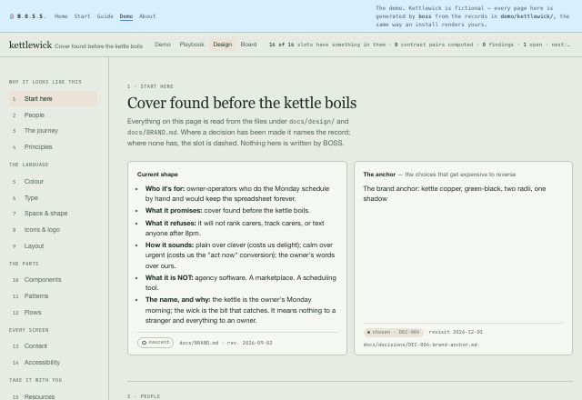

Drift: the 47 blues
Each new screen, the model derives slightly different colours. bg-blue-500,
#3B82F6, blue-600, a custom variable, all in one codebase,
none of them agreeing. Components multiply the same way:
Button → CTAButton → PrimaryButton, near-identical,
because nothing searched for the existing one.
The fix is structural: a token file before the second screen, and prompts that name tokens semantically rather than by value.
Sameness: the slop default
A codebase can be perfectly token-disciplined and still look like every other AI-built app. That's a different failure: not drift, but the absence of a decision.
The fix is a choice: intentionality, not intensity. Bold maximalism and refined minimalism both work; what fails is defaulting. For a first build, minimalism done precisely beats maximalism done loosely; restraint hides fewer mistakes.
Spend the hours the AI just saved you on the 5% that's actually yours.
The brand, the voice, the one memorable thing. Banking the speed and shipping the mean is how "build faster" quietly becomes "build sameness."
three layers, not two
Tokens go primitives → semantic → component. Two layers is fragile under AI
generation: the model takes the easier path and hex codes escape. Three gives it a semantic
name to grab (color.action.primary, never indigo-600) so the
system survives being generated against.
BOSS scaffolds this the moment your project grows real UI (/design-tokens-init),
not before. Style is the canonical case of Principle 3: nothing valuable gets locked
into code. The test is whether a prototype or a sibling project could reuse it
without copy-pasting.
the floors
- Five states on everything. Default, hover, active, disabled, focus, plus empty and loading wherever data lands. At least one is always missing by default, and it's usually empty or loading, which are the most user-facing failures there are.
- Accessibility is a floor, not a trade-off. Contrast measured rather than asserted, visible focus, real landmarks, and colour never the only signal.
- Performance counts as design. A page that jumps while a webfont loads is a design decision someone didn't make.
Tokens are the floor. Most systems never build the middle.
Ask what a design system is and you get “tokens and components.” That is a floor and a set of walls. It is not what makes two screens feel like one product, and it is not what Material or the Human Interface Guidelines actually are — those are mostly patterns with guidance, which is the layer nobody ships.
BOSS holds eight, and names them so you can tell which one you are missing:
- Brief — why it looks like this. The brand, which is upstream of design and belongs to no single lens.
- Foundations — colour, spacing, type, radius, elevation. All five enforced, not one.
- Components — an index the agent opens, rather than a rule it is asked to remember.
- Patterns — a recurring decision with a rule. The missing middle.
- Flows — the sequence, and which step to cut.
- Content — voice, tone, one word per concept.
- Visibility — the thing you can look at.
- Learning — how the language grows from what you actually built.
The last one is the point. A pattern is named when the same decision comes up twice — once is a choice, twice is a pattern — and BOSS notices when three design reviews have happened and your product has never named one of its own.
Zoom into the floor: tokens come in three tiers, and the middle one is the trick
Tokens are the bottom rung of the eight above, and they have their own structure: three
tiers, scaffolded at the first UI commit, and the tier that matters is the middle one. Semantic tokens are named by purpose, never by hue.
--color-danger, not --color-red. The reason is mechanical: when
you retheme, every use site changes at once, because nothing downstream ever
referred to the colour, only to the job.
Component boundaries follow the same logic: element-shaped, not page-shaped. Extracting a primitive from a page-shaped component means untangling it from the page it was born in, which is the work everybody defers until it is too expensive.
Three failure modes, named, because unnamed ones get rebuilt
- 47 blues. Each screen generated separately, each picking its own approximation of your brand colour. Nobody decides this; it accumulates.
- Pattern reinvention. Every new component becomes a new file:
Button, thenCTAButton, thenPrimaryButton, because generating a new one is cheaper than finding the old one. - Billion-line drift. Code grows linearly with screens instead of roughly flattening, because nothing is being reused. This is the one you notice last and pay for longest.
All three are the default outcome of AI-generated UI, not a mistake someone made. That is why the tokens arrive at the first UI commit rather than at the first complaint.
The library exists so the agent stops rebuilding the button
The gallery is not mainly for you to browse. Alongside it BOSS writes a manifest that
doubles as the agent's reuse index, so the next time something needs a
button, the model has a list of what already exists instead of generating
PrimaryButton.tsx next to the CTAButton.tsx it wrote last week.
That's the actual cure for pattern reinvention. An AI never generalises across sessions unless something hands it the inventory. It isn't lazy, it simply can't see what it can't be told about, and generating a new component is always cheaper than finding the old one.
Boundaries are a naming habit that costs nothing now and a rewrite later
Ask an AI for a settings page and you get a page-shaped component: everything entangled with the page it was born in. Ask for element-shaped pieces and you get primitives that compose. The cost of getting this wrong isn't refactoring; it's that extracting primitives later is a rewrite, which is why it's the most-missed and most-expensive call on the list.
What the library actually contains, and the half everyone forgets
- Foundations: colour, type, spacing. The part people mean when they say design system, and the smallest part.
- Components, every variant, all five states: default, hover, active, disabled, empty, loading. At least one is always missing, and it's usually empty or loading, which are the two a user is most likely to meet on a bad day.
- The rule sets: principles, do/don't pairs, terminology, voice. A library of components with no rules is a box of parts. This is the half that gets skipped and the half that makes the rest usable by someone who wasn't there.
All of it rendered from your code and tokens, so it cannot drift, and where a component has drifted from the tokens, the drift is rendered on the component rather than filed in a report nobody opens.
The discipline that keeps it honest cuts the other way too: a component nobody uses is drift you're paying to maintain, and worse, it's a decision the next agent will copy.
A system that can only add rules locks your design in
Every design system knows how to add. Almost none know how to take something back — and a system that only ever ratchets tighter is lock-in, no matter how sensibly each individual rule arrived.
So promotion has a threshold and so does demotion. A component nobody imports gets deleted. A token nothing references is dead. And three exceptions to the same rule means the rule is wrong — not that you have three exceptions. A rule with three standing exceptions is not being followed, it is being worked around, and the working‑around is the real convention now.
The same instinct governs what BOSS refuses to decide for you. The composition layer — type roles, rhythm, surface language, hierarchy — ships empty. It names the slot and leaves the value to you, because a type scale handed over on day one, when you know least, is lock‑in wearing a best‑practice hat. A named blank is not a gap. It is a decision that exists whether or not anyone looked at it, made noticeable — and the slots get filled by reading back what you already built, never by handing you a form.
A design system you can actually look at
Most design systems are a document describing components, kept beside the code. That's the failure: a gallery authored next to the implementation starts drifting the moment either one moves, and nobody notices until a screen looks wrong.
/design-library generates the thing instead: a self-contained HTML gallery of
your foundations (colour, type, spacing) and every component in every variant and
all five states, and the rule sets too: the principles, the do/don't
pairs, the terminology, the voice. Rendered from the code and tokens. The code stays the
source of truth, so the library cannot disagree with the product. Re-run it any time; it's
idempotent.
--check makes it a gate.
Which closes the loop on the two failures above: tokens stop the 47 blues, the manifest stops pattern reinvention, and the gallery makes both visible instead of theoretical.
The design space
boss design renders your design system as one page under .boss/,
a sibling of the playbook on the same page shell: every
value copies, and every hole stays a hole. It opens with who it is for before it
shows a colour — People (every persona as a card with its evidence ledger), The journey (the
stages with their source labels and the gaps named), Research (the evidence cut by rung and
by method, with what has never been tried) — then the tokens, the principles and the brand.

boss design renders it. Open it.--check turns
drift into a gate, and where the project already runs a component explorer with its own
index, it defers to that rather than keeping a second one.
rgb(), bg-blue-500) and hands Claude your token names
instead. A prompt convention is a filter; this is the check. Silent
until a DESIGN_TOKENS.md exists: no token system, no opinion. It also reads
that document's Deprecated table, so a retired token name is answered with its
successor and a rename never has to be a deletion. It ships switched off, like every
optional hook, because it runs after each file write.
Status column, so an import of something marked
deprecated → X is told to use X. The second keeps imports
flowing one way, ui/ → features/ → app/, naming the crossing the moment
a write adds it. Paths, not syntax: the same hook works for TypeScript, Vue, Svelte
and Dart.
/ux-check walks the
actual journey rather than the spec, checks the five states are real and not
merely designed, and runs accessibility heuristics. Token enforcement, the five states, and the
flow read end-to-end rather than screen-by-screen. Findings say whether they were
observed or inferred. A review can only walk what it can run, and it
tells you which it did, and names the runner that would turn a not checked row
into a checked one.
Persuasion gives someone a reason and lets them decide. Manipulation exploits how they decide.
That line is the whole of BOSS's conversion ethic, and it's testable. The say-it-out-loud test: would you say that decline sentence to the person's face, in a shop? If it exposes a sneer, cut it. The urgency-honesty rule: a real deadline is a fact you can state; the manipulation is only ever in the falsity.
This site failed its own test first. Twice.
The first draft of BOSS's visual identity was warm cream, a serif display face, a terracotta
accent, hairline rules and a decorative 01 / 02 / 03 rail. That is, precisely, a
named 2026 AI-default cluster. BOSS walked straight into the failure its own practice
exists to prevent.
The lesson is the transferable part, and it's the opposite of what you'd guess: you
can't escape a cluster by swapping the palette. You break it by deriving the choices from the
subject. The accent stayed. The display face became the mono stack, because
BOSS is a terminal and its headlines should come from the same world as its proof. The
numbered rail became the ▸ the CLI actually prints, because the sections were
never a sequence.
It also exposed something worse than a bad page: the practice that warns about AI-default still named the 2025 tell (purple gradient, Inter, centred card) while reporting itself fresh. A practice naming last year's default is worse than no practice, because it certifies the current one as safe.
The second failure was quieter. The token file said the ground was "cool poured concrete, deliberately not warm cream", and for a year the ground was hue 43°: the cream's own hue with the saturation turned down, a nudged default wearing a comment that said otherwise. The first time a rendered-page linter was pointed at this site (2026-09-12, forty findings) it read the ground as cream, eleven text pairs under the contrast floor, seventeen measures past eighty characters, and the tracked ALL-CAPS label above every heading that the practice on this page names as the commonest tell. A comment is a claim. A rule never pointed at yourself is a claim with better posture. The ground moved to the graphite's own hue, the floors went to zero, and the decision record said what moved and why. A day later the palette was re-opened on purpose — fourteen candidates, each mocked on this site's own header and put through the same arithmetic before a word was written about it — and the one that shipped is five colours with one job each: paper, an ice surface, cornflower for structure, persimmon for the one loud thing. The rule that keeps them five is a sentence, cornflower structures, persimmon points, and the record that keeps the sentence is a decision with a date it can fail by.
Design system, or style never locked into code
learned from Brad Frost — Atomic Design Nathan Curtis — design tokens W3C Design Tokens Community Group UXBench (Wang et al.) GitHub Primer — contributor docs & ADRs zeroheight — Design Systems Report 2026 Feature-Sliced Design Alan Alickovic — bulletproof-react Radix Primitives Omlet Chromatic
where this came from
The limits of an AI-run design review — it reliably improves feedback and scannability, and barely moves whether the flow itself is right — come from UXBench (2026), read as direction rather than magnitude. Generalized from a dogfooded design system — design tokens as the single source of truth, central badge and pill style utilities, an enforcement hook that rejects raw framework colors, and a prototype registry — then stripped of everything product-specific so it would transfer. The AI-failure-mode catalog was written in the same pass.
AI-native interface patterns (2026)
learned from Shape of AI Microsoft HAX guidelines Google PAIR Nielsen Norman Group (2026) Apple HIG — generative AI CDT — Dark Patterns in AI Chatbots (2026) Vaccaro et al., CHI'26
where this came from
Distilled from an AI-UX scan across Shape of AI, Microsoft HAX, Google PAIR, IBM Carbon, LangChain HITL, NN/g 2026 and Apple's HIG for generative AI. The dark-pattern checklist and its humane alternatives come from CDT's Dark Patterns in AI Chatbots (2026, CC-BY); the classic web pattern families and their regulatory teeth (effect-not-intent, symmetry-in-choice) from the first humane sweep; the cohort and frontier patterns — accessibility, minors, agentic, algorithmic management — plus junk-fee teeth from the second. Later additions: generated code injects dark patterns (Vaccaro, CHI'26) and the dev-tool metering surface. The dark-pattern catalog has since moved to its own practice and data file so it can grow without growing what any one founder reads.
Accessibility: the guidelines, not the compliance theatre
learned from W3C Web Accessibility Initiative (WAI) ARIA Authoring Practices Guide
where this came from
Structured on W3C's own framing — the four POUR principles and the WCAG conformance levels — so a recommendation can always be followed back to the standard it came from. The split between what a tool can check and what needs a person is BOSS's, inherited from the observed/inferred discipline its after-code review already uses.